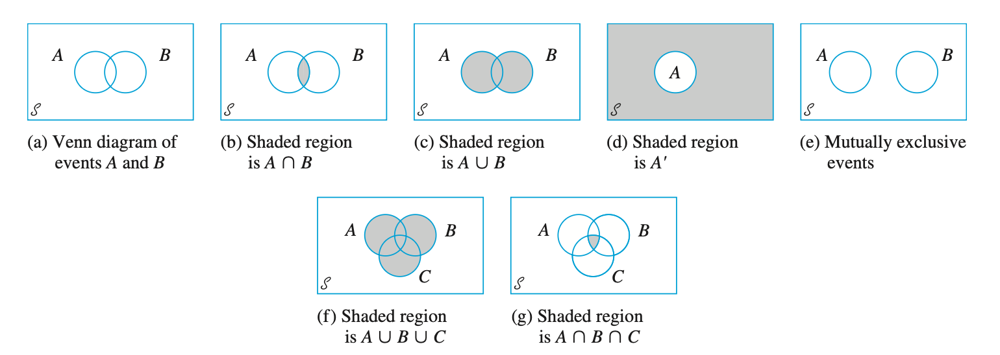
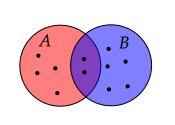
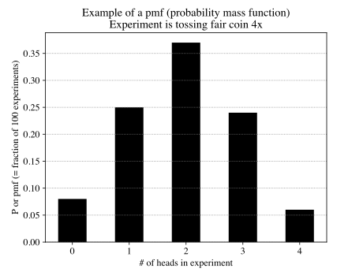
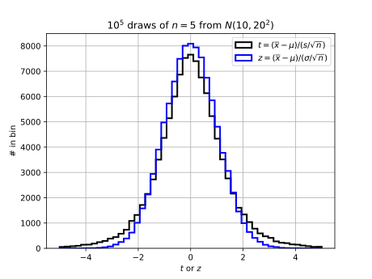

An experiment is any activity or process whose outcome is subject to uncertainty. …
Thus experiments that may be of interest include tossing a coin once or several times, selecting a card or cards from a deck, weighing a loaf of bread, ascertaining the commuting time from home to work on a particular morning, obtaining blood types from a group of individuals, or measuring the compressive strengths of different steel beams. (Devore p 51)
An experiment is any process, real or hypothetical, in which the possible outcomes can be identified ahead of time. (DeGroot p 5)
Note that different experiments can be assigned to an activity:
Experiment: Flip a coin 2x and record result of each flip. Can ask what fraction of experiments had head for the first flip.
Experiment: Flip a coin 2x and record number of heads and tails. Can ask what fraction of experiments had one head.
The result of part of an experiment or the result of the full experiment. (Not generally defined; the first definition implies it is the result of the full experiment, which is inconsistent with the implicit definition in the first definition.)
… the set of all possible outcomes of an experiement. (Devore p 51)
The collection of all possible outcomes of an experiment is called the sample space of the experiment. (DeGroot p 6)
The outcomes in a sample space are noted using the shorthand
{outcome 1, outcome 2, …}
For example, if the experiment is tossing a coin twice and writing down the result of the first toss in box 1 and the result of the second toss in box 2,
{, , , }
If the experiment is tossing a coin twice and counting the total number of heads and tails, the three simple events are , and the sample space is
{, , }
We can define a compound event (event defined next) for both experiments: is the outcome of the experiment yielding one tail.
Question: Experiment: Each day, shoot free throws until you miss. What are the outcomes that make up ?
Demonstration
Simulate the experiment of shooting a free throw 10 times. Assume you make 80% of your free throws.
Question: How would you use the simulation to estimate the chances that you get in a row? Start with the sample code that follows.
# Start with native Python library. Will consider better options later.1import random2a = [0, 1]3# Randomly select an element from the list a4result = random.choice(a)5Question: How many exprimental outcomes are in ? If you execute this number of experiments with your code, will all experimental outcomes in have been generated?
Question: Describe how you would use a program to print all outcomes.
An event is any collection (subset) of outcomes contained in the sample space . An event is simple if it consists of exactly one outcome and compound if it consists of more than one outcome. (Devore p 52)
An event is a well-defined set of possible outcomes of the experiment. (DeGroot p 5)
Question: Can we also say a sample space is the set of all possible simple events?
The sample space of an experiment can be thought of as a set, or a collection, of different possible outcomes; and each outcome can be thought of as a point, or an element, in the sample space. Similarly, events can be thought of as subsets of the sample space. (DeGroot p 6)
Describe an activity that requires the use of the terms “Experiment”, “Outcome”, “Sample Space”, and “Event”. Bonus for not using coin tosses. Double bonus if funny.
The following program draws draws random numbers to form list and random number to form list and plots the results. Ordinary least squares regression is used to find the line of best fit. We are interested in the outcome that the best fit slope is greater than .
Question: What is the experiment? What are outcomes in ? What are the events?
Code. We will do many such experiments on homeworks.
import numpy as np1import matplotlib.pyplot as plt2# Generate random data on interval [0, 1]4x = np.random.rand(10)5print(x)6y = np.random.rand(10)7print(y)8# Perform ordinary least squares regression10# We'll cover this later in the semester.11# Solve y = Ax + b for the best fit line parameters m and c12A = np.vstack([x, np.ones(len(x))]).T13print(A)14fit = np.linalg.lstsq(A, y, rcond=None)16print(fit)17m, c = fit[0]19# Discuss issues with this plot and my expectations for homework submissions.21plt.scatter(x, y, label='Data points')22plt.plot(x, m*x + c, 'r', label='Best fit line')23plt.xlabel('x')24plt.ylabel('y')25plt.legend()26plt.show()27The term probability refers to the study of randomness and uncertainty. In any situation in which one of a number of possible outcomes may occur, the discipline of probability provides methods for quantifying the chances, or likelihoods, associated with the various outcomes. (Devore p 50)
Given an experiment and a sample space , the objective of probability is to assign to each event a number , called the probability of the event , which will give a precise measure of the chance that will occur. (Devore p 55)
A statistical probability is thus the limiting value of the relative frequency with which some event occurs. (Bulmer p 4)
Probability will be the way that we quantify how likely something is to occur (in the sense of one of the interpretations in Sec. 1.2. [Frequency Interpretation, Classical Interpretation, and Subjective Interpretation]). (DeGroot p 5)
A repetition of an experiment.
The interpretation [of probability] most frequently used and most easily understood is based on the notation of relative frequencies. (Devore p 57)
Repeat experiment times (each repetition is called a “replication”). If event occurs times in replications, then relative frequency is .
The objective interpretation of probability identifies this limiting relative frequency to (Devore p 57)
Said another way,
If exeriment is not repeatable, prior information must be used to determine and not everyone may conclude the same ; in this case has a subjective interpretation. See DeGroot 2012 and Ross 2022 for a discussion of interpretations of probability.
Python example of Figure 2.2 Devore:
import random1a = [0, 1]3# Experiment: Randomly select an element from the list a5result = random.choice(a)6# Repeat the experiment n times8n = 29results = []10for exp in range(1, n+1):11 result = random.choice(a)12 results.append(result)13print(f"n = {n} experiments:")15print(f" Results: {results}")16print(f" rf(0) = {results.count(0) / n}")17print(f" rf(1) = {results.count(1) / n}")18“Not ” is represented by four symbols:
The complement of an event , denoted by , is the set of all outcomes in that are not contained in . (Devore p 53)
means the events in which occurs but not .
means the set is a subset of .
“Or” (union; inclusive or) is typically represented by
The union of two events and , denoted by “ or ” is the event consisting of all outcomes that are either in or in or in both events (so that the union includes outcomes for which both and occur as well as outcomes for which exactly one occurs) – that is, all outcomes in at least one of the events. (Devore p 53)
XOR – “Exclusive or”: means the event that is in or , but not both.
“And” (intersect) is represented by three symbols: &
The intersection of two events and , denoted by and read “ and ,” is the event consisting of all outcomes that are in both and . (Devore p 53)
Let denote the null event (the event consisting of no outcomes whatsoever). When , and are said to be mutually exclusive or disjoint events. (Devore p 54)
Defined in Null Event definition. Also referred to as “pairwise disjoint”.
Venn diagrams are useful for visually describing set operators. It is debatable if they are the best option for describing the relationships between sets for much else.

Drawing the Venn diagram for experiment with 2 flips where is one or more heads and is one or more tails.
Use set notation to describe the region of that is not shaded in Figure (b).
Use set notation to desribe the region outside of and in Figure (a).
Often referred to as Kolmogorov’s Axioms
For any event , .
If , , … is an infinite collection of disjoint events, then
Corallary
Note that many textbooks give the third axiom in terms of a sum over two events instead of a sum over an infinite set of events.
(Devore p 56)
Axioms do not completely determine an assignment of probabilities to events. The axioms serve only to rule out assignments inconsistent with our intuitve notions of probability. (Devore p 57)
Corallary to Axiom 3 (Devore p 59 calls this a proposition):
For any event ,
Example
In an trial where the result is either true (with probability ) or false (with probability ) and we run trials until we get a false, the sample space of all experiments is {, , , …}, where
, , , …
By Axioms 2 and 3, we expect
to equal because the s are disjoint. We will learn later why , , , …
Using this, we have
Recall the formula for an infinite geometric series:
With and , we conclude
See also Devore Example 2.12.
(Devore does not use this term, however)
For any event , , from which . (Devore p 59)
(Devore does not use this term, however)
For any two events and that are mutually exclusive,
(Devore does not use this term, however)
For any two events and ,
For any three events , , and ,
Visual proof for two events
Imagine overlapping targets and and darts are thrown towards target.
Viusally, the number of ways or occured:
Divide by the total number of dots, , use the relative frequency interpretation of probability, and replace with “and”:
Example (Devore Chapter 2, problem 12)
Consider randomly selecting a student at a certain university, and let denote the event that the elected individual has a Visa credit card and be the analogous event for a MasterCard. Suppose that , , and .
Compute the probability that the selected individual has at least one of the two types of card (i.e., the probability of the event ).
What is the probability that the selected individual has neither type of card?
Describe, in terms of and , the event that the selected student has a Visa card but not a MasterCard, and then compute the probability of this event.
Provide both visual “proofs” or mathmatical calculations.
(Based on visual derivation)
(Based on visual derivation)
Typically, we don’t do mathematical proofs on sets – demonstrations with Venn diagrams are usually sufficient.
We want to know the probability of event given event occured. One way to do this is by counting writing down how we expect the number of times occured given event occured in terms of set operations. First, consider the fraction
The numerator is the number of times and occured.
The denominator is the number of times occured – it can occur when did not did not occur.
Note that and are mutually exclusive, so , so we can also write
which is also visually obvious from a diagram.
Dividing all terms on the right-hand side by , using the definition of probability in terms of relative frequency, and introducing the symbol “” gives the definition of conditional probability:
We were given that the probability of a student having a Visa is 0.5; the the probability of a student having a MasterCard is 0.4; and the probability that they have both is 0.25.
We were asked to find the probability that the student has a Visa but not a MasterCard.
How is this different from the statement “given the student has a Visa, what is the probability that they do not have a MasterCard?”
In the first case, we don’t know anything about any of the students. In the second case, we are told to only consider a subset of all students. Our new sample space contains only the part of the original sample space.
“The probability that the student has a Visa but not MasterCard” can be written in terms of a conditional probability: ; based on the statement, we know the student has a Visa, so we are given that is true. We want to find the probability that the student does not have a MasterCard.
Using
we need to compute the right-hand side of
Based on the Venn diagram, we know and we were given , so
is sometimes called the multiplication rule
Example
If you are in a firing line and two people have guns that shoot a real bullet instead of a blank with probability of 1/3, what is the probability that you get shot (assuming the marksmen never miss?)
Answer
If and are independent, , so
. Thus
or,
Check:
Also called “Bayes’ Law” and “Bayes’ Theorem”. Different forms are also used.
Definition of conditional probability for two events:
Swapping letters gives
The numerators are identical because . Combining these two equations gives Bayes’ rule.
Posterior: (probability after knowing occured)
Prior: (probability prior to knowing occured)
Marginal probability: (why “marginal”?)
Likelihood: conditional probability on right–hand side,
Odds ratio or relative likelihood:
Other forms of Bayes include
posterior = odds prior
and the proportionality
posterior liklihood prior
See also Understanding Bayes Theorem with Ratios, which uses
original odds evidence adjustment = new odds
In medical terminology (see also Wikipedia; notes by ekamperi; and Covid examples: 1 | 2 | 3),
Sensitivity, (true positive rate):
= (number of true positives)/(n true positives + n false negatives)
= (true positives)/(total number with disease)
where is a positive test result and means “disease present”
Specificity, (true negative rate):
= (number of true negatives)/(number of true negatives + number of false positives)
= (number of true negatives)/(total number without disease).
where is a negative test result and means “disease present”
Likelihood ratio: (See also The likelihood ratio and its graphical representation): , where is the test result (could be a continuous variable such as “HDL colesterol”) Then
Post-test odds of = LR(r) Pre-test odds of
If is dichotomous (test result is positive or negative), then
and
Visual Derivation/Exploration

Figure 1
Question: What is in Figure 1? That is, how many dots have labels of both and ? (Give a number)
Answer: 2
Question: What is in Figure 1? That is, how many dots have labels of both and ? (Give a number)
Answer: 2
Question: In terms of , what is in Figure 1? That is, how many dots have labels of or ?
Answer:
Question: In terms of and , what is in Figure 1?
Question: In terms of and , what is in Figure 1?
Figure 2
Question: In terms of , and , what is in Figure 2?
Question: In terms of , and , what is in Figure 2?
Answer:
Question: In reference to Figure 2, what is in terms of , and ?
Question: In reference to Figure 2, what is
in terms of, and ?
Answer:
or
or
Question: In reference to Figure 2, what is
in terms of , and ?
Answer
or
or
check
Let , … , be mutually exclusive and exhaustive events. Then for any other event ,
Explain this using a table and a Venn diagram.
Consider a square partitioned by three non-overlapping rectangles. Draw as a rectangle inside the square. We can count the number of elements in using conditional counts:
Using , etc., we have
Divide both sides by to arrive at the result.
Three types of problems:
Product Rule:
A. Given ordered boxes and choices for first box, for the second, …
B. Given ordered boxes and choices for first box, for second, …
Permutations: Given one set of length , how many distinct ordered sets with no duplicates of elements can be created? (e.g., set = {a, b}, permutations are {a, b}, {b, a}. Similar to a product rule B. problem where , , ….
Combinations: Same as 2. except counting all sets with the same elements as equivalent. (e.g., if set = {a, b} only one combination is possible: {a, b}).
(Devore does not name but gives as proposition on p 65)
If the first element or object of an ordered pair can be selected in ways, and for each of these ways the second element of the pair can be selected in ways, then the number of pairs is .
One can use a tree diagram, table, or – plot to prove.
Tree Diagram
Use for visually justifying product rule and counting permutations (Devore p 66)
Tuple
A “–tuple” is an ordered collection of objects. (Devore p 66)
General Product Rule
AKA Product Rule for -Tuples
Suppose a set consists of ordered collections of elements (-tuples) and that there are possible choices for the first element; for each choice of the first element, there are possible choices of the second element; …; for each possible choice of the first elements, there are choices of the th element. Then there are possible -tuples. (Devore p 66)
Note that “elements” is used here, but in definition of tuple, objects is used.
Example
Take two steps, each step is North, South, East or West.
Put one of N, S, E, W in first box and same for second box. Result is unique step pairs.
Tree diagram.
Equivalent problem: Sample with replacement from set {N, S, E, W}.
Example:
If operation 1 is moving north, south, east, or west and operation 2 is moving up or down, then there are 8 possible operations of length .
Example:
Two teams of twelve players each. How many unique handshakes between members of opposing teams?
Answer: , , .
Demonstrate method computing using loops in Python.
Tree diagram
Example: Roll a die five times. How many -tuples? Create a five boxes. There are six possible “choices” for first box, six possible choices for second box, ….. So there are possible –tuples.
Example: Flip a coin 2 times. There number of –tuples is . (Think of two boxes and you put either a or in the first box and a or in the secon box.)
Example: Given three circles of different diameter and four squares of different side length, put a circle in the first box and a square in the second. The number of –tuples is .
Example: Each clinic has two doctors and three doctors and you must select two doctors from the same clinic. How many possible pairs of s and s are there?
In the first box, put one of the four s. For each , there are s to choose from and put in the second box. So .
If each clinic also has three s and two s, how many possible choices for four doctors?
In the third box, put one of the three s; in the fourth box, put one of the three s. Then .
Example: Suppose you want to pick a team of two tennis players from players, , , and . The number of ways you can pick the team is : , , , , , and .
This is not the list possible teams because is the same as (That is, order is not important.). The list of possible teams is , by inspection.
An ordered arrangement of distinct objects, where each arrangement has no duplicate objects. Usually relevant in problems that involve “without replacement”.
Suppose you have distinct objects and you want to put them in boxes labeled , , …, . You select one object and put it in the first box. You select a second object from the remaining objects and put it in box , ….
The number of ways to do this is denoted (or ) and is
To see this, consider
Example
Step {N, S, E, W}. Then take another step, but not in the same direction as first.
Answer:
Example:
You have stickers labled , …, that are used to form a license plate.
How many unique license plates of length can you form? Answer:
How many unique license plates of length can you form? Answer:
Example
A four-volume work is placed in random order on a bookshelf. What is the probability of the volumes being in proper order (1, 2, 3, 4)?
Answer:
Example
A subway train made up of cars is boarded by passengers (), each entering a car completely at random.
What is the number of ways the passengers can board?
What is the probability of the passengers all ending up in different cars?
Answer:
Consider list of passengers and each can be assigned number :
Have choices for first passenger, , for second, … for the last:
The number of unique –tuples if –tuples with the same elements (but in a different order) are treated as the same. In the team picking example, there are team combinations.
Each permutation can be regarded as group of . If we regard a group as equivalent if they have the same elements, then there are fewer groups than permuations. For example, if the two permutations
are regarded as equivalent, then there is only one group containing the numbers and . To determine the number of possible orderings of each permutation, ask how many ways a set of elements can be arranged. The answer is .
So, to find the number of combinations, divide the number of permutations by .
is often called a binomial coefficient and the denoted by and referred to as “ choose ”.
Example
Select two players from a list of three.
Assign one as captain. How many unique teams?
If there is no assignment of a captain, how many unique teams?
Example:
How many unique ordered hands of size can be formed using a -card deck?
Answer: This is a permutation problem: permutations.
How many hands of size can be formed using a -card deck?
Answer: Each permutation can be rearranged in ways. So the number of hands (combinations) is
“All” of the data is called the population. A population can be finite or infinite. An example of a finite population is all US citizens. An example of an infinite population are values from a continuous probability density function. (Technically, when you draw a value from a continuous probability distribution, you are actually drawing from a discrete distribution, because there are finite number of values that can be represented as 64–bit floating point numbers.)
Devore p 214
A statistic is any quantity whose value can be calculated from sample data. Prior to obtaining data, there is uncertainty as to what value of any particular statistic will result. Therefore, a statistic is a random variable and will be denoted by an uppercase letter; a lowercase letter is used to represent the calculated or observed value of the statistic.
Note that the sample can contain all data, so alternatively, a statistic is a quantity computed based on values in population (the population mean is a statistic).
A computation based on all values in a population.
A computation based on a sample from a population that gives an estimate of the equivalent value that would be obtained if the same computation was performed on the population (see also Devore p214).
By random samples, we mean a value drawn from a population with a certain probability distribution. In general random samples implies “independent and identically distributed random variables” (often abbreviated iid).
When we take a sample from a population and compute a statistc, for example the sample mean, we want to know the uncertainty in the statistic. That is, we want to know the probability distribution of the means. That is, if we repeated the experiment many times, what would be the distribution of the sample means for all experiments. The probability distribution of the test statistic is the sampling distribution.
If the sampling distribution is known, we use it to compute error bars on a test statistic. Sampling distributions are also needed for hypothesis testing.
In HW 2.3, we derived a sampling distribution numerically. It was found that when values of were drawn from a Gaussian distribution with mean and standard deviation and the statistic
was computed times, 95% of the time the range
included . (We say that this range “traps” 95% of the time.) We actually did not need to do the numerical experiement when is large. We know the expected result from the Central Limit Theorem.
The sampling distribution of a test statistic depends on the equation for the test statistic and the population distribution. There are a limited number of test statistic/population distributions for which we know the exact sampling distribution of the test statistic. Simulation can be used in other cases.
Values are drawn from a population with known pdf and pdf parameters and a sample statistic is computed. This process is repeated many times to create a pdf of the sample statistic.
This procedure was used in HWs 2.3, 2.4, and 3.3.
Example: Draw values from and compute . Repeat and plot the pdf or histogram of the values.
This method does not have practical value – if you know the distribution and its parameters, you can simply use the analytical equation for the pdf. I generally have students use a parametric simulation to reinforce the idea of the meaning of the sampling distribution of a test statistic – that it is a hypothetical distribution that would result if you could do many repeated experiments.
The definition of the idiom “bootstrapping”is “get (oneself or something) into or out of a situation using existing resources.”
Values are drawn from a population with known pdf and unknown pdf parameters and a sample statistic is computed. The parameters of the population pdf are estimated using the sample. The process is to draw values from a pdf with these estimated parameters and compute a sample statistic and repeat times.
Example: Draw values from and compute and . Next, draw values from and compute and repeat this process times.
Values are drawn from a population with unknown pdf (both functional form and its parameters) and a sample statistic is computed.
Example: Draw values from and compute and . Next, create a new sample of size by resampling the values with replacement and compute ; repeat the resampling process times.
This procedure was used in HW 4.2.
For small , “clustering” can occur because a given value can appear more than once in a bootstrap sample. One way to address this is to add a small random value to each value in the bootstrap sample.
Discrete
Continuous
See James p27
See James p27
Events and are independent if
Devore p 83
Two events and are independent if and are dependent otherwise.
Devore p 84
and are independent if and only if (iff)
The weak law of large numbers Rozanov, p 69: given a and , there is an integer for which the quantity (with iid) will be in a small window centered on with a probability greater than , that is,
or, equivalently,
with a probability greater than . This means we can choose very small and values and there will always be a value of for which the constraints are satisfied.
The Law of Large Numbers tells us that as the sample average defined by
will be near the population average with a given probability. Given samples from a population, we don’t expect to exactly match . The Law of Large Numbers allows us to make a statement about the difference . Specifically, the statement involves the probability that is smaller that a certain value.
To answer the following questions, you do not need to understand the Law of Large Numbers. However, if you are interested, more formal definitions and proofs are given in
See also Devore p 225.
The Law of Large Numbers tells use that if we require to fall in range that we specify around with a probability that we specify, we can find an value to satisfy our requirement. The central limit theorem says that for large , is Gaussian-distributed with mean and standard deviation .
With the Central Limit theorem, we can make statements such as “I took a sample of values and computed . If I took many samples and computed many , 95% of the time the range would include (“trap”) .
The Central Limit Theorem says that for large , is Gaussian-distributed with mean and standard deviation .
Important: this theorem (usually) applies even if the distribution of the values used in computing are not Gaussian–distributed.
With the Central Limit theorem, we can make statements such as “I took a sample of values and computed . If I took many samples and computed many , 95% of the time the range would include (“trap”) .
Brewer 1985, citing Freund 1962, Mathematical statistics
Sometimes the Central Limit Theorem is interpreted in that the distribution of approaches a normal distribution. This is incorrect, inasmuch as under the conditions of Theorem 7.9 the variance of approaches 0 as . On the other hand, Theorem 7.9 justifies approximating the distribution of with a normal distribution whose mean is and whose variance is , when is sufficently large (p. 187).
The above statements are consistent with typical textbook statements such as
Rozanov p 79
Roughly speaking, the central limit theorem asserts that the distribution of the sum of a large number of independent identically distributed random variables is approximately normal.
Bulmer p 109
The real reason for the importance of the normal distribution lies in the central limit theorem which states that the sum of a large number of independent random variables will be approximately normally distributed almost regardless of their individual distributions; any random variable which can be regarded as the sum of a large number of small, independent contributions is thus likely to follow the normal distribution approximately.
However, technically, they are not consistent with the mathematical statement of the CLT, which is
DEFINITION. Given a sequence of random variables , with finite means and variances , consider the “normalized sum”
where
Then the sequence , is said to satisfy the central limit theorem if
Note that
Also, Degroot p 361,
Central Limit Theorem (Lindeberg and Le’vy). If the random variables , …, form a random sample of size from a given distribution with mean and variance (, then for each fixed number ,
where denotes the c.d.f. of the standard normal distribution.
Neither forms of the CLT state that for large , the sampling distribution of is Gaussian. It states that if you compute many times, the probability that is in the range will be the same as that for the Gaussian in the limit that . It suggests that the difference between and that expected from a Gaussian decreases as increases, which is why we say, inaccurately, “the sampling distribution of is approximately Gaussian for large ”. This statement is inaccurate because “large” and “approximately” is not defined. Also, the CLT not state that the difference is monotonically decreasing for all .
See also https://online.stat.psu.edu/stat414/book/export/html/750 https://www.bmj.com/rapid-response/2011/11/01/note-correct-interpretation-central-limit-theorem Brewer 1985, citing Freund 1962, Mathematical statistics
Sometimes the Central Limit Theorem is interpreted in that the distribution of n\rightarrow inftyoverline{x}\mu\sigma^2, when is sufficently large (p. 187).
In the experiments done in the homework, the values are random samples from a probability distribution with expectation values for the mean and variance defined by and .
The probability distribution of the s, each computed using samples, is called the sampling distribution.
Probability Distribution Functions: Continuous (e.g., Gaussian) or Discrete (e.g., Binomial)
pdf can mean probability distribution function (dimensionless) or probability density function (has units of 1/)
is a probability distribution function. Suppose that is a length in .
pmf means probability mass function. Its sum is . A pmf is a probability distribution function
Continuous probability distribution functions must sum to .
Devore (p 97) calls the discrete case a “probability mass function” and I’ve been using the variable . If is a discrete variable, then
and
An example probability mass function that we’ve used is , , which can be used to simulate the outcome of a fair coin toss, where represents tails and represents heads. The Binomial Distribution is another discrete probability distribution.
To compute a probability mass function from a histogram, scale the histogram heights by the total number of observations.
# src=notes/code/pmf.py

Bulmer, Chapter 6 has good derivation of Binomial using a heads/tails example.
Unique approach in Chapter 1 of Kittel and Kroemer
References
The original Possion paper is in French but is covered in English by Stigler 1982. Possion used limit of Binomial distribution and Stigler notes De Moivre derived a related approximation to the Poisson formula.
Derived independently by Bateman using a differential equation approach in Rutherford, Geiger, and Bateman, 1910
If
in a sufficiently short amount of time, , only 0 or 1 event can occur (two or more simultaneous events are impossible);
the probability of exactly 1 event occurring in is equal to , where is a constant; and
any non-overlapping intervals of length are independent Bernoulli trials,
the probability of events occurring in the time interval is
for sufficiently large .
There were quite a few questions about this problem. It may make more sense to derive it without reference to time and then insert the time dependence at the end.
If is the probability of event in time , and, by definition, , then
Next, using the definition ,
The interpretation is that if the probability of a success in a trial is , then the probability of successes in trials is .
A common use case for this equation is when an event takes a certain amount of time to occur (e.g., a hurricane or large solar flare). In this case, it makes sense to define a rate parameter which is the number events per unit time, which is , where is the probability of an event in . This variable corresponds with how we would describe the probability of an event, e.g., on average 0.01 hurricanes occur per day or in 100 days, 1 hurricane will occur.
It also make sense to talk not about the number of “trials”, but rather the number of s, where each corresponds to a trial. In this case, we can define a time as . This definition allows us to say “given 0.01 hurricanes occur per day, what is the probability that 2 hurricanes occur in a month”.
See also the lecture notes by Orloff and Bloom
The discrete case is called the “probability density function”, and I’ve been using the variable . The requirements are
and
In the continuous case, the probability that is a given value is , which is a differential. As a result, it only makes sense to talk about the probability that is in a range, e.g.,
An example of a continuous distribution is the Gaussian or Normal:
which satisfies and
You are already familiar with statements such as “95% of the time a value of drawn a Gaussian will be in the range , or
To compute a probability density from a histogram, divide the height of each histogram bar by the total number of obervations and the width of each bar. The sum of the resulting bar heights will be unity.
Can be derived from Binomial 1; 2. Simple derivation in Chapter 1 of Kittel and Kroemer. The key is to identify a small parameter, (r=right, l=left), the number of steps from the origin after steps, and then rewrite equation using it. This allows approximations involving .
The “Standard Normal” is the sampling distribution of the quantity
Constraint: is a random variable with mean and standard deviation and (unless the random variable is normally distributed, which case any )
A standardized variable will have a histogram that is centered on the origin and a standard deviation of unity.
If is a random variable from almost any probability distribution with mean and standard deviation , the sampling distribution of is the Standard Normal as
The “Student ” distribution is the sampling distribution of the quantity
where
Constraint: is a Gaussian–distributed random variable. Both the numerator and denominator of will vary from sample to sample and so we expect that the histogram of
to be “fatter” or have “fatter tails” than
The distribution is actually a family of distributions that depend on and so “ distribution” is ambiguous. We usually discuss “a distribution with ” degrees of freedom, where .

The Chi-square () distribution is the sampling distribution of the quantity (think “error” as in the sum–of–square error)
Constraint: is a Gaussian–distributed random variable. https://openpress.usask.ca/introtoappliedstatsforpsych/chapter/5-2-the-normal-distribution-as-a-limit-of-binomial-distributions/
Similar to the distribution, the distribution is actually a family of distributions that depends on .
We use the distribution deriving error bars and confidence intervals for mean-square errors and power spectra.
Can be derived from Poisson
The general definition of the expectation operator is, for discrete ,
or, for continuous
By definition, . That is is the average of over the population. The variance of a population is defined as
When we invent a statistic (a quantity computed from a sample) that is intended to be used as an estimate of a similar quantity from a population, we want the statistic to be unbiased. That is, the expectation value of the statistic should equal the population value. Two statistics that were considered are the mean and variance.
A point estimate of a parameter is a single number that can be regarded as a sensible value for . A point estimate is obtained by selecting a suitable statistic and computing its value from the given sample data. The selected statistic is called the point estimator of . (Devore p 243)
is usually a point estimate of a population statistic based on a sample of the population. (Why “point”? Probably because we get a single value.)
A point estimator is said to be an unbiased estimator of if for every possible value of . If is not unbiased, the difference is called the bias of .
Examples: If values drawn from and are 1, then is is unbiased estimator of (Devore p 244, but stated in different way).
If X1, X2, . . . , Xn is a random sample from a distribution with mean , then \overline{X} is an unbiased estimator of . If in addition the distribution is continuous and symmetric, then and any trimmed mean are also unbiased estimators of . (Devore p 246)
Proof that the point estimator is an unbiased estimator of .
Taking the expectation, we have
Note that
which means the right-hand side is a double sum. We can swap the order of the sum, giving
The term means the expectation value of all possible first-selected values from the sample. All possible first-selected values from the sample is the same as all possible values of . Thus, . Using the definition, , we have
In your physics labs, you use the equation
as an estimate of the population parameter in the model equation
were are independent and randomly distributed values from a Gaussian distribution with zero mean and standard deviation .
Note that is not a random variable because values are given, so it can be treated as a constant. Thus
and
Thus,
and so
Alternative:
Subsitution of
into
gives
Using
gives
or
Finally, using
because the values are fixed and can be treated as constants, we can conclude that .
Devore p 267
An alternative to reporting a single sensible value for the parameter being estimated is to calcu- late and report an entire interval of plausible values—an interval estimate or confidence interval (CI). A confidence level of 95% implies that 95% of all samples would give an interval that includes m, or whatever other parame- ter is being estimated, and only 5% of all samples would yield an erroneous interval. The most frequently used confidence levels are 95%, 99%, and 90%. The higher the confidence level, the more strongly we believe that the value of the parameter being estimated lies within the interval (an interpretation of any particular confidence level will be given shortly).
Devore p 270
it is tempting to conclude that is within this fixed interval with probability .95. … It is therefore incorrect to write the statement P( lies in (79.3, 80.7)) = .95.
Another way of rebutting is to consider two experiments. If experiment yields a 95% CI of and we conclude
The above statements are is in range with probability and is in the range with probability . This implies that is in the range with probability of , which is greater than . Clearly the interpretation of confidence intervals as cannot be correct.
Devore Equation 7.5
A % confidence interval for the mean of a normal population when the value of is known is given by
Devore Equation 7.9
Suppose is an estimator satisfying the following properties: (1) It has approximately a normal distribution; (2) it is (at least approximately) unbiased; and (3) an expression for , the standard deviation of , is avaialable. Then
Devore Equation 7.10
Devore Equation 7.15
Let and be the sample mean and the sample deviation computed from the results of a random sample from a normal population with a mean . Then a % confidence interval for the mean is
Devore Equation 7.17
A % confidence interval for the variance of a normal population is
Note that corresponds to the value of such that the area to the right is . This is opposite of , which is such that the area to the left is .
It is best to always think of the values as corresponding to a small area.
Devore p 301
The null hypothesis, denoted by , is the claim that is initially assumed to be true (the “prior belief” claim). The alternative hypothesis, denoted by , is the assertion that is contradictory to .
The null hypothesis will be rejected in favor of the alternative hypothesis only if sample evidence suggests that is false. If the sample does not strongly contradict , we will continue to believe in the plausibility of the null hypothesis. The two possible conclusions from a hypothesis-testing analysis are then reject or fail to reject .
Devore p 302
will generally be stated as an equality claim. If denotes the parameter of interest, the null hypothesis will have the form : , where is a specified number called the null value of the parameter (value claimed for by the null hypothesis).
Devore p 303
A test procedure is specified by the following:
A test statistic, a function of the sample data on which the decision (reject or do not reject ) is to be based [example ]
A rejection region, the set of all test statistic values for which will be rejected
The null hypothesis will then be rejected if and only if the observed or computed test statistic value falls in the rejection region.
Devore p 304
A type I error consists of rejecting the null hypothesis when it is true.
A type II error involves not rejecting when is false.
The conclusion drawn from a two-tailed confidence interval is usually the same as the conclusion drawn from a two-tailed hypothesis test. In other words, if the the 95% confidence interval contains the hypothesized parameter, then a hypothesis test at the 0.05 level will almost always fail to reject the null hypothesis. If the 95% confidence interval does not contain the hypothesize parameter, then a hypothesis test at the 0.05 level will almost always reject the null hypothesis.
Summary of Algorithm
Choose a population parameter, that you want to subject to an equality claim (“null hypothesis”, ) of the form , where is the “null value”.
For example, suppose we want to test the claim that the mean of a population is 1.0; then and and is .
Choose an alternative hypothesis, . For example . The “rejection region” described below depends on the alternative hypothesis.
Find the equation for , an unbiased estimator of .
For example if we want to test the claim that , and unbiased estimator of is , so .
Determine the sampling distribution of . This sampling distribution will depend on the population distribution (which is rarely known). In most textbook examples, the exact sampling distribution is known because the population distribution is assumed to be known. Also, textbook sampling distributions for are usually from a short list of common distributions: , , , .
Example: If population is , the sampling distribution of is
Example: If population is , the sampling distribution of is
Choose a rejection region in the sampling distribution. If the value of from the sample, , is in this region, the equality claim will be rejected. The rejection region has associated with it an area, . If is , the rejection region is values of in the the lower and upper region of the sampling distribution.
Example:
If we assume population is and execute an experiment of drawing values from it and compute , we reject the null that if is in the “rare” region of the sampling distribution for . We do not reject the null hypothesis otherwise.
Based on the assumptions about the population distribution and the fact that the sampling distribution of is if these assumptions are true, we exect to occur in 5% of hypothetical experiments.
Based on this example, when we reject, we are claiming “if we could repeat the experiment many times and compute many values, values in my selected rejection region are rare, so I’ll reject the hypothesis if an expeirment yields an is in the rejection region; otherwise, I won’t reject the null hypothesis”. Notice that the statements don’t involve claims that is true or false. They only involve statements about whether the observation is likely or not. In a similar way, a jury’s conclusion of “guilty of murder” is a usually a statement that “not guilty” is unlikely given the information they were presented. The jury rarely has undisputable evidence that the defendent murdered someone; they usually only have information about motive, means, and opportunity.
In summary, a hypotheis test has the logic: Given claim + experimental observation, if a given observation is unlikely based what we know about the probability of every possible experimental observation that could occur, reject claim; otherwise, don’t reject claim (it is tempting to say “accept claim”, but that is equivalent to making a statement that the claim is true).
A confidence interval can be framed as a hypothesis test (See also Bulmer p 169). Consider the test
:
:
Test statistic: , which is an unbiased estimate of .
Rejection region: of sample outside the CI. For a 95% CI, the region is the values of associated with the left tail of area and the right tail area of
We can repeat the above hypothesis test for any inside the CI. We will not reject for any in the rejection region.
: Population parameter is inside the CI of (so is any value in the CI).
: Population parameter is outside the CI of .
Interpretaion
“Rejecting ” does not mean is false. It means is unlikely, where the unlikelyness threshold is determined by the confidence interval width.
Bulmer, p 165
The rejection of a hypothesis at the 5% level does not imply that the probability that the hypothesis is false is 95%; it merely implies that the observed result belongs to a class of results whos overall probability of occurrence, if the null hypothesis is true, is 5%. This provides good reason, in the sense of a rational degreee of belief, for supposing the hypothesis to be false, but no numerical value can be placed upon this degree of belief.
Confidence intervals have recently been promoted over the use of hypothesis tests for a litany of unsupported reasons. (a) Among its supposed benefits is the assertion that confidence intervals provide more confidence than do hypothesis tests. This is based on the fallacy that confidence intervals are based on some system of probability theory other than that of hypothesis tests, when in fact they are the same. (b) Another prevalent misconception is confidence intervals must be symmetric.
Devore p 328:
Using the rejection region method to test hypotheses entails first selecting a significance level . Then after computing the value of the test statistic, the null hypothesis is rejected if the value falls in the rejection region and is otherwise not rejected. We now consider another way of reaching a conclusion in a hypothesis testing analysis. This alternative approach is based on calculation of a certain probability called a -value. One advantage is that the -value provides an intuitive measure of the strength of evidence in the data against .
Devore p 329:
The -value is the probability, calculated assuming that the null hypothesis is true, of obtaining a value of the test statistic at least as contradictory to as the value calculated from the available sample.
Devore p 329:
Beware: The -value is not the probability that is true, nor is it an error probability!
John M Hoenig & Dennis M Heisey (2001) The Abuse of Power, The American Statistician, 55:1, 19-24, DOI: 10.1198/000313001300339897
When fitting a straight line to data using the equation , we most often make the following assumptions about the process that generated the data. First, we assume that each of the sampled () values were generated by drawing a value from a Gaussian distribution with and standard deviation and then adding to it , where are values that are known with zero uncertainty. The values of and are unknown quantities that we seek to estimate given a limited set of measurements of the population and equations for and (involving and ) that you typically first encounter in a physics lab.
To simulate the process of generating values described above, choose a value for . Next, draw a value from a Gaussian distribution with a mean of zero and standard deviation of , the value of which is represented by the variable . Then solve for using
Repeating this process times will yield values of and . When we do linear regression on a set of measurements, we assume that the system we took measurements from works in a way that is equivalent to the above process – we give the system an input of an value and it returns an output based on this process.
In this problem, you will create a population of pairs using the above process and then draw a sample of pairs. Then, you will compute and , which are estimates of the respective population parameters and .
Create a population of pairs using , , and . For values of , use . Create a scatter plot of these values.
Randomly draw pairs with replacement from the population and plot them on the same axis as the previous plot.
Use the equations used in your physics labs to compute and using the 20 values drawn in step 2. When your code is executed, it should print out and .
Find a Python (if you are using Python) library that will compute and for you. When your code is executed it should print out the values of and computed with the library.
Add the values of and from parts 3. and 4. as annotations to your plot. Save your plot using plt.savefig('HW7_1a.png', dpi=300) if you are using Python.
In your physics labs, you were typically given an equation for the uncertainty (a confidence interval) in and . In this problem, you will use the non–parametric bootstrap to obtain an estimate of the uncertainty.
From your sample of values in part 1., randomly draw pairs with replacement times. For each draw, compute and (using equations or library). Use the histogram of and to estimate their 95% confidence intervals. Plot your histograms on a single page as two subplots. Add an annotation to indicate the 95% confidence intervals. Save your plot as HW7_1b.png.
For parts 6. and 7., see Devore Chapter 12 or Bulmer Chapter 12.
Use a test to compute the 95% confidence interval for . (You’ll have to research the appropriate test statistic to perform the test on.) Provide brief justifications or references for any equations. Add this confidence interval as an annotation to the plot for part 5.
Note that some libraries will compute confidence intervals, but I want you to look up the equations because it is not always the case that a library will compute confidence intervals, and if it does, you should compute it on your own and compare to the library result to ensure (1) the library is producing the correct result and (2) your understanding of what the library is doing is correct. Most commonly used libraries have been tested by many users, so their calculation is usually correct, and thus doing the check for (1) may seem excessive. However, quite often we mis–interpret the documentation for the library, which will be revealed by the check for (2).
In part 5., values for and were computed. Use the values to test the claim that the errors in the estimate and , given by and , respectively, are not independent. (This lack of independence was mentioned in Bulmer; take an informal observational/experimental approach to answer this question; a plot and some words will suffice).
590 only
In part 5., the non–parametric bootstrap was used to compute confidence intervals. How would the procedure be modified to use either a parametric simulation or the parametric bootstrap? (See my notes for definitions).
Compute the correlation coefficient, cc, between and using the values from part 5. Test the hypothesis : cc , : cc and state at what significance level can be rejected (that is, compute the value).
The lag autocovariance of a sequence with integer is defined as
where is the expectation operator. The autocorrelation at lag is
where is the population mean of and is the population standard deviation.
For a finite sequence of length with , according to Box, Jenkins, and Reinsel (p31; 1994), “… the most satisfactory estimate of the lag th [population] autocorrelation is”
where
Create a sequence of measurements using
where are drawn from a gaussian distribution with zero mean and unit variance. Use and .
Compute and plot .
The values of the population autocorrelation (which Wilks calls the “theoretical autocorrelation”) can be computed using Equations 10.33a and b and 10.25 of Wilks, 2019; pg 504. Compute and plot it on the same axes as .
Use the parametric bootstrap to estimate the sampling distribution of . Use this sampling distribution to estimate a 99% confidence interval for computed in part 1.
Use equation 2.1.11 of Box, Jenkins, and Reinsel (p31; 1994) and from part 2. to compute . Compare this variance with the variance of the sampling distribution found in part 3.
Using the same sequence of values used for part 1. of the previous problem, use equations 10.29a and b of Wilks, 2019 to compute and . Use either the parametric or non–parametric bootrap to estimate a 99% confidence interval for the computed and .
In class, a student asked if given a sequence of values if we can estimate properties of the driver function (assuming the model is correct). Equation 10.26 of Wilks, 2019 is an estimate of the variance of in terms of , , and the population autocorrelations. Use this formula to estimate using , and the values of found earlier.
(Follow-up based on issues with previous HWs)
In class, I defined the periodogram coefficients as
where .
FFT algorithms typically compute (see the numpy.fft documentation)
with .
For the signal , compute all , , and values
Write a function that takes an input of an arbitrary signal , uses numpy.fft to compute and then returns the , and values computed from . Your function should not have a for loop.
The Fourier series model for having an odd number time steps is
where and has least-squares estimates of and of
with and
The values of and are also called the discrete fourier transform (DFT) coefficients.
There are a total of unknown parameters in the model equation. If is even, and so the number of free parameters in the model equation is still ; also, the last terms simplifies: .
(The equations for the parameter estimates and are found by multiplying the Fourier series model equation by and and then summing both sides over to . In the E&M book by Griffiths, he calls this “Fourier’s trick”.)
The raw periodogram is defined as (Box and Jenkins, 2016)
for . To understand it, suppose and , then is the maximum value of . When you compute the power of a wave, you compute , so the quantity is related to the “raw power spectrum” by a scaling factor.
Similar to the issue with “probability distribution”, “power spectrum” is ambiguous. It could mean so the units are the units of squared or it could be a “density”, , so the units are (units of )/(units of frequency). I typically avoid this issue by either labeling my y–axis as with caption (periodogram) or by using the label and caption “Magnitude of discrete Fourier transform amplitudes” if I am plotting .
As an example of ambiguity, consider the two plots in the Wikipedia entry for Periodogram. The y–axis is labeled “Spectrum” and the title is “Periodogram”. In my definition above, the “spectrum” is the times the periodogram, so these annotations are confusing.
This part is not related to statistics, but I find myself doing this when I am trying to figure out what someone did to compute a plot and also to understand various other aspects of DFT calculations. The reason it is so complicated is the definition issue above, indexing (MATLAB uses 1–based indexing, Python 0–based), and the fact that depends on if is even or odd.
Consider the signal .
Compute all and values using the above formulas.
Use a library (e.g., numpy.fft) to compute and . Note that most libraries compute a quantity related to and and their output is an array of complex values.
Create a “white noise” time series by creating a time series with values drawn from a Gaussian with zero mean an unit variance and plot vs . The plot of should be noisy. One problem with raw periodograms is that they are noisy. There are entire books dedicated to dealing with this.
Plot the histogram of values.
590 Only
Look up the sampling distribution of and add it on to the histogram.
Modify the white noise time series by adding a periodic signal and plot . At what value of can you “see” evidence of the periodic signal? Suppose you were given only the values of and want to determine there is evidence of a periodic signal. Describe in words the analysis that you would perform.
Answer
See HW9_2.py.
The sampling distribution of is (Chi-squared with two degrees of freedom) unless or when is even, in which case it is (Chi-squared with two degrees of freedom). See Wilks 2016 Eqn 10.79 (pg 541); see also some lecture notes. The Chi-square distribution arises when one adds the squares of –distributed values. (Recall that the sum–of–square error for linear regression was Chi–squared distributed.)
Quite often, the periodicities in a signal change with time. For example for the first half a measurement of a time series, there may be a single dominant frequency. In the second half, the dominant frequency may have changed. If one computes the periodogram of the entire time series, there will be peaks at the two dominant frequencies, but the fact that the dominant frequency was time dependent is lost.
A spectrogram is based on a series of “Short–Time Fourier Transforms” (STFTs). The procedure is to split the full time series into segments and compute the Fourier coefficients for each segment.
Create a time series segment of length that is a sin wave of period . Append to this a time series segment of length that is a sin wave with period . Plot the combined time series.
Compute and plot the periodogram of the combined time series.
Compute and plot the periodogram of each segment. Put the periodograms in a numpy array with two rows. Plot the periodograms on the same axis.
Compute periodograms by splitting the full time series (length ) into non–overlapping subsegments of length . Put the periodograms into a numpy array with rows. Plot the matrix as a heatmap. The axis should be the subsegment number (, the axis should be frequency, and the colorbar should correspond to .